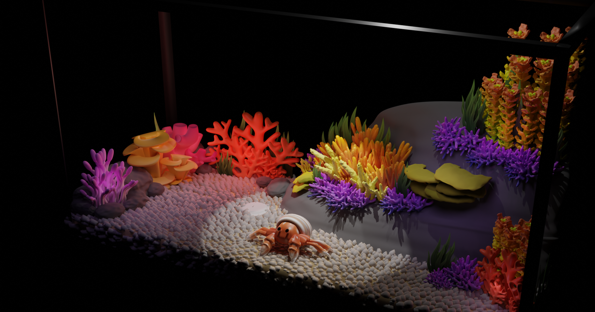

Water Tank

Description
During a visit to the aquarium, I was able to observe the corals closly. I got inspired by it and decided to make a small water tank that filled with different corals. I also added a hermit crab into a scene because I think they're a cute creatures. They have a strict requirement for living, so it's best that I have it as an imaginary pet.
Reference